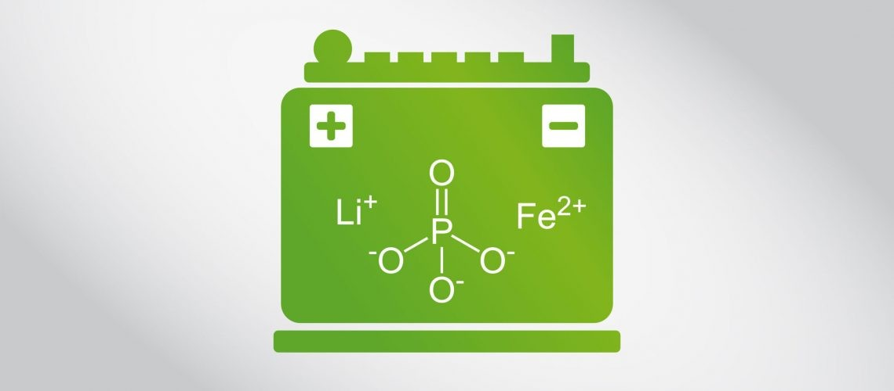
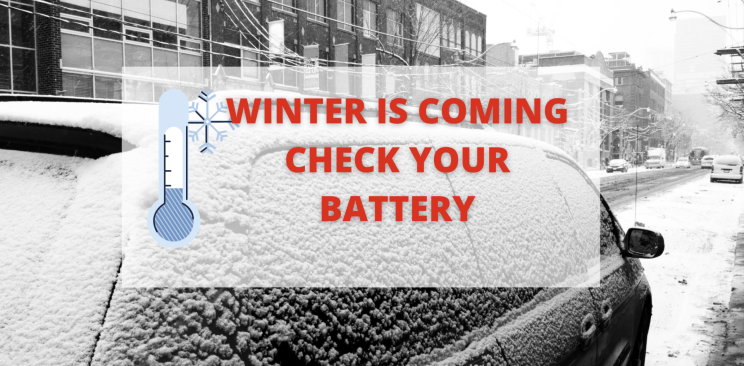

Cold weather significantly impacts the performance, lifespan, and safety of lithium-ion. Understanding and addressing these effects is crucial for applications like electric vehicles, portable electronics, and energy storage systems operating in cold climates.
Why LFP Outperforms Other Chemistries in Cold Weather
Lithium Iron Phosphate (LFP) batteries possess unique properties that make them more effective in combating the challenges posed by cold weather. These properties enhance their performance, safety, and longevity in low-temperature environments.

1. Superior Thermal Stability
- Chemical Structure: The stable olivine crystal structure of LFP allows it to resist thermal stress caused by temperature fluctuations.
- Low Risk of Decomposition: Unlike other chemistries, LFP does not degrade as quickly in cold weather, maintaining its performance.
2. Wider Temperature Tolerance
- Operating Range: LFP batteries function efficiently in temperatures as low as -20°C (-4°F), which is broader compared to other chemistries like NMC or LCO.
- Consistent Discharge: They maintain a relatively stable discharge curve even in cold conditions, ensuring reliable power output.
3. Reduced Susceptibility to Lithium Plating
- In cold weather, lithium plating on the anode during charging is a common issue in lithium-ion batteries.
- LFP Advantage: Its slower electrochemical reaction reduces the chances of lithium plating, enhancing both safety and longevity.
4. Low Internal Resistance
- Cold Weather Efficiency: LFP batteries exhibit lower internal resistance than some alternatives, even at low temperatures, minimizing energy loss and heat generation.

5. Excellent Cycle Life
- Cold Durability: While many batteries experience accelerated degradation in cold climates, LFP retains its long cycle life due to its robust chemistry.
6. Safe Chemistry
- No Thermal Runaway: LFP is inherently stable and less prone to thermal runaway or fire, even under stress from extreme cold.
- Safety Under Charge and Discharge: The ability to handle cold conditions without excessive stress on internal components makes it safer.
7. Compatibility with Thermal Management Systems
- LFP batteries efficiently integrate with external solutions like heating pads, insulation, and temperature-regulating battery management systems (BMS), making them adaptable for cold-weather use.
8. High Coulombic Efficiency
- Minimal Energy Loss: LFP chemistry maintains high coulombic efficiency in cold weather, ensuring minimal energy loss during charge and discharge cycles.
By leveraging these properties, LFP batteries offer reliable and efficient performance in cold climates, making them an ideal choice for applications such as electric vehicles, renewable energy storage, and portable power solutions in wintery environments.